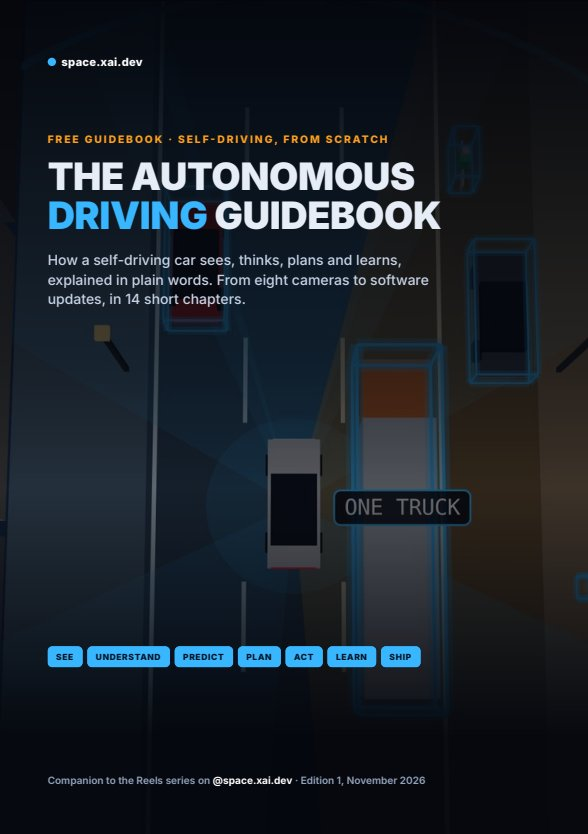

space.xai.dev

Free guidebook
The Autonomous Driving Guidebook
How a self-driving car sees, thinks, plans and learns, explained in plain words. From eight cameras to software updates, in 14 short chapters.
Download the free PDFWhat's inside
- 01How the car sees
- 02What is a neural network?
- 03Bird's-eye view and occupancy
- 04Predicting what others will do
- 05Planning a path
- 06Control: steering, brake, throttle
- 07End-to-end: one network to drive
- 08The data engine
- 09Auto-labeling
- 10Training compute, and the Dojo story
- 11Simulation
- 12Shipping safely
- 13The car's computer
- 14Mercedes vs Tesla: two philosophies
Every chapter has its own short Reel in the series Self-Driving, From Scratch. New episodes are on the way.
Follow @space.xai.dev on Instagram →